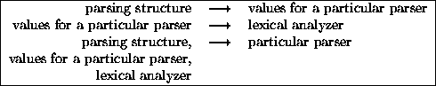

Next: Error Recovery
Up: Introduction
Previous: General
ML-Yacc uses the ML modules facility to specify the interface between
a parser that it generates and a lexical analyzer that must be supplied
by you. It also uses the ML modules facility to factor out
a set of modules that are common to every generated parser.
These common modules include a parsing structure, which contains
an error-correcting LR parser![[*]](/opt/latex2html-97.1/icons.gif/foot_motif.gif) , an LR table structure, and a structure
which defines the representation of terminals. ML-Yacc produces
a functor for a particular parser parameterized by the LR table
structure and the representation of terminals. This functor
contains values specific to the parser, such as the
LR table for the parser, the
semantic actions for the parser, and a structure containing
the terminals for the parser. ML-Yacc produces a signature
for the structure produced by applying this functor
and another signature for the structure containing the terminals for
the parser. You must
supply a functor for the lexing module parameterized this
structure.
, an LR table structure, and a structure
which defines the representation of terminals. ML-Yacc produces
a functor for a particular parser parameterized by the LR table
structure and the representation of terminals. This functor
contains values specific to the parser, such as the
LR table for the parser, the
semantic actions for the parser, and a structure containing
the terminals for the parser. ML-Yacc produces a signature
for the structure produced by applying this functor
and another signature for the structure containing the terminals for
the parser. You must
supply a functor for the lexing module parameterized this
structure.
Figure 1 is a dependency diagram of the modules that summarizes this
information. A module at the head of an arrow is dependent
on the module at the tail.
Figure 1:
Module Dependencies
|  |
Next: Error Recovery
Up: Introduction
Previous: General
Dave MacQueen
4/24/2000